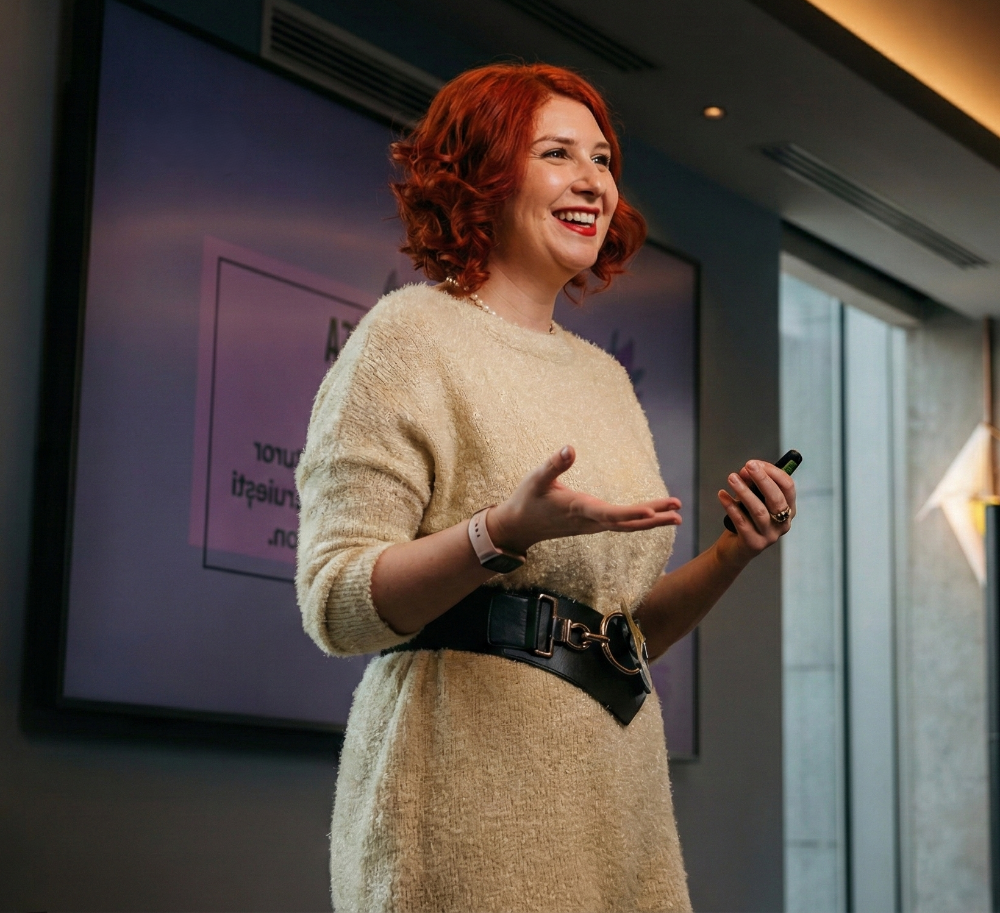

About Raluca Despre Raluca
Futures of Work Strategist. AI Fluency Trainer. Certified Foresight Practitioner. Futures of Work Strategist. Trainer AI Fluency. Certified Foresight Practitioner.

Building AI agency, one organization at a time. Construim AI agency, organizație cu organizație.
Raluca Păduraru helps leaders build AI agency, the clarity to see through the noise and the confidence to act.
Raluca Păduraru ajută liderii să construiască AI agency, claritatea de a vedea prin zgomot și încrederea de a acționa.
Most AI training teaches people which buttons to press. Raluca works on something harder: how leaders and teams think about AI, how they evaluate what's real and how they make strategic decisions when everything keeps shifting.
Majoritatea training-urilor de AI îi învață pe oameni ce butoane să apese. Raluca lucrează pe ceva mai greu: cum gândesc liderii și echipele despre AI, cum evaluează ce e real și cum iau decizii strategice când totul se schimbă continuu.
Raluca brings 17 years of operational management into every engagement. She's been inside organizations when they resist change, when middle management pushes back, when teams are scared, when leadership wants results but doesn't want to change how they work. She knows what adoption actually looks like beyond the slide deck.
Aduce 17 ani de management operațional în fiecare colaborare. A fost în interiorul organizațiilor când rezistă la schimbare, când middle management-ul se opune, când echipele sunt speriare, când leadership-ul vrea rezultate dar nu vrea să schimbe modul de lucru. Știe cum arată adopția dincolo de slide deck.
Her approach combines 3 disciplines that rarely sit together: strategic foresight, hands-on AI fluency training, and deep understanding of organizational behavior. She's a Certified Foresight Practitioner (TFSX), a member of the Association of Professional Futurists, and she's currently pursuing an MSc in Counselling & Leadership, because the human side of transformation matters as much as the technical one.
Abordarea Ralucăi combină 3 discipline care rareori stau împreună: foresight strategic, training practic de AI fluency și înțelegere profundă a comportamentului organizațional. Este Certified Foresight Practitioner (TFSX), membră a Association of Professional Futurists, și urmează un MSc în Counselling & Leadership, pentru că latura umană a transformării contează la fel de mult ca cea tehnică.
She has delivered 800+ hours of workshops to over 5,000 professionals across manufacturing, tech, government, education, and services. She has built proprietary frameworks (like 4D, M.O.D.E.L., F.O.R.C.E.) that give teams practical tools for working with AI while improving their judgment.
A livrat 800+ ore de workshop pentru peste 5.000 de profesioniști din manufacturing, tech, guvern, educație și servicii. A construit framework-uri proprii (precum 4D, M.O.D.E.L., F.O.R.C.E.) care dau echipelor instrumente practice de lucru cu AI fără să-și piardă discernământul.
Beyond client work, Raluca co-founded Upvance Global to make upskilling and reskilling make sense for today's workforce, and she runs AIResponsabil.ro as a resource for responsible AI adoption. She serves on the advisory board of Smart HR Community and on the leadership team of IAF Romania.
Dincolo de munca cu clienții, a co-fondat Upvance Global pentru a transforma modul în care organizațiile abordează procesele de upskilling & reskilling și administrează AIResponsabil.ro ca resursă pentru utilizarea responsabilă a AI. Face parte din advisory board-ul Smart HR Community și din echipa de leadership a IAF Romania.
By the Numbers În cifre
Credentials & Certifications Certificări și acreditări
 Certified Foresight Practitioner (TFSX)
Certified Foresight Practitioner (TFSX)
 Association of Professional Futurists
Association of Professional Futurists
 Certified Agile Leadership
Certified Agile Leadership